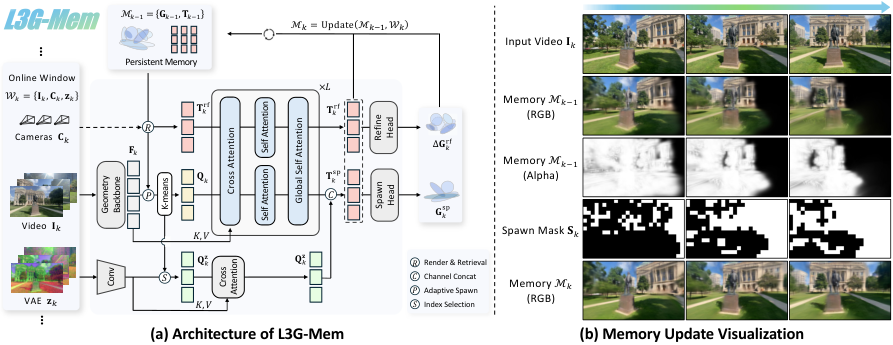

Paper Analysis
01 · What the Memory Is Expected to Do
这项工作的主要任务是世界生成，而不是恢复一段真实输入视频的全部几何。从初始图像建立场景后，模型沿给定相机轨迹生成新视图，将生成结果再写回三维记忆。未观察区域的内容来自生成先验；因此“返回后仍一致”与“还原真实世界”是不同目标。
系统包含 L3G-Mem 和 L3G-Gen。前者输入当前窗口的 RGB、相机参数、VAE latent 和旧记忆，输出更新后的高斯及其 token；后者读取目标相机下的记忆渲染，生成下一段视频。生成 latent 直接交给 updater，RGB 通过一次 VAE 解码取得，避免在两个模块之间反复编码。
普通高斯存中心、尺度、旋转、不透明度和颜色；这里还存 16 维 VAE 特征。VAE 特征是视频生成器使用的压缩视觉表示，不是 CLIP 类开放词汇语义向量，不能因为它是 learned feature 就称作语言对齐语义。
正文为了记号简洁把 token 与高斯配对，附录的实际 head 则让每个 token 解码 32 个高斯。因此 token 数与图元数不能混用，报告内存时也要说明是否包含伴随 token、网络权重和临时激活。
Paper Analysis
02 · Reading Figure 2: Spawn and Refine

Jinhyeok Choi et al. · CC BY 4.0 · Original figure, unmodified · Paper & Caption ↗
原图左侧先用 DA3 提取几何特征。旧记忆在当前相机下渲染 RGB 与累计 opacity：低 opacity 表示覆盖不足，高 RGB 误差表示已有表示不能很好解释观测。二者任一成立，就将对应 patch 标为候选新增区域。这个规则依据几何覆盖与光度误差，不使用类别或实例语义。
附录将每个 14×14 patch 的 RGB MSE 和 opacity 求均值，以 E>0.05 或 A<0.25 构造 spawn mask。只在掩码内的几何特征上做 K-means，形成紧凑的新增 queries；不是每个像素都新增一个图元。queries 数量随掩码比例线性变化。
已有高斯通过渲染确定可见性：在投影椭圆中心与主轴采样，要求深度不明显落在已渲染表面之后，同时局部 opacity 达到阈值。满足条件的高斯关联 token 被取回用于 refinement，未取回条目保持不变。这避免每一步都计算全部历史。
新增 queries 与 refinement tokens 进入同一处理结构，依次 cross-attend 当前几何特征、进行各自的 self-attention，再通过 global self-attention 交换信息。新增 head 输出新高斯；refine head 输出中心、尺度、旋转、不透明度、颜色及 latent 的残差。
旧高斯的几何和颜色使用门控 g，latent 残差使用独立门控 g_z。这样可以修正当前可见区域而不重新堆积整幅图像。它仍不是无条件不增长：高误差的旧区域也会触发新增，探索更大空间会增加条目。
附录查询预算处将 1,024 与 10,240 都标作 N_min，显然存在记号歧义；结合前文应有上下界，但缺少实现时不宜据此保证零掩码下完全不新增。这里采用“主要随覆盖增长”的有限主张，不把摘要表述当成严格容量定理。
S_k(p) = 1[E_k(p) > τ_E or A_k(p) < τ_α] G_new = Head_spawn(T_spawn) G_visible ← G_visible + gated residuals M_k = updated visible entries ∪ unchanged entries ∪ new entries
Paper Analysis
03 · Direct Latent Rendering
VAE lifting 使用与几何 queries 对齐的空间索引初始化 latent queries，再对当前 VAE tokens 做 cross-attention。得到的 latent token 与几何 token 沿通道拼接，head 同时解码高斯属性和每个高斯的 16 维特征。
读取时把 latent feature 作为颜色的替代量进行 alpha compositing：每个像素的特征是按投影覆盖、深度顺序和透射率加权的高斯特征和。相机变化时，同一三维条目会投到新的二维位置，直接提供与目标视点对齐的条件。
传统 RGB 地图必须先渲染图像再经过 VAE encoder，才能给 latent diffusion 使用；这里直接在目标 latent 分辨率渲染。收益既来自少图元，也来自跳过 RGB→VAE 这一转换，不能将数百倍的 conditioning FPS 增益全部归于高斯 rasterizer 本身。
生成器将渲染 latent、opacity 与 noisy latent 沿通道拼接；历史参考 latent 作为额外 token 条件，最多取三个相机邻近参考。只对目标 latent 去噪，参考不作为预测目标。因而 L3G-World 并不是只剩一份高斯、完全没有其他时序上下文。
Fast 学生还维护压缩的长时历史和最近两段全分辨率上下文，标准 self-attention 与相机条件 attention 分别缓存 KV。分析系统总内存时，应包含这些状态，不能把高斯图元存储等同于整个模型峰值显存。
z_render(u) = Σ_i z_i α_i(u) ∏_{j<i}[1 − α_j(u)]
Generator input: [noisy target latent; rendered memory latent; opacity]Paper Analysis
04 · Training Losses and the Actual Gradient Paths
L3G-Mem 在连续五个无重叠窗口上训练，每个窗口含 1–9 个输入图像。相机真值提供给几何 backbone 和 renderer，深度监督来自 DA3；训练片段采用统一坐标与尺度。它不是在无位姿流式输入上自行学习全部定位的设定。
每次更新后，从截至当前的各窗口目标视点渲染当前记忆，计算 RGB L1、LPIPS、深度 L1、VAE MSE 与 visibility loss。早先视点也参与当前监督，因此当前新增或修正不能只拟合新帧而破坏旧视图。推理不需要这些监督目标。
正文明确对 M_(k−1) stop-gradient。就这条全局状态递归而言，窗口 k 的损失可训练当前 refinement，却不会通过旧状态反传到 k−1 的写入。detach 并不是因果推理的必要条件；它是训练计算图的选择，因果性取决于是否读取未来输入。
但附录又明确，spawn stream 的 cross-attention 与局部 self-attention KV 在采样 rollout 内保持 attached。因此不能概括成“所有历史梯度都被截断”。准确表述是全局 memory 路径截断，而特定 attention cache 仍存在片段内梯度路径；尚无公开实现可逐行验证两者边界。
另一处关键 detach 位于 VAE feature rasterizer：几何在该渲染路径中被截断，VAE loss 监督 lifted features 与共享 token，但不沿这个 rasterizer 直接移动 Gaussian centers。共享参数仍可能间接影响几何输出，然而“特征损失直接优化几何位置”不是本文可支持的说法。
L3G-Mem 从 ZipSplat 初始化，新增 refinement、global attention 和 VAE 模块从头训练，几何 foundation model 也参与更新。生成器另以 rectified flow 训练 LoRA 与相机/输入模块，再进行 flow-map 和 on-policy 蒸馏；这不是一个无需训练的后处理插件。
L_mem = mean_k(L_RGB + λ_p L_LPIPS + λ_d L_depth + λ_z L_VAE + λ_v L_visibility) M_k = Update_θ(stopgrad(M_(k−1)), W_k) The equation describes the global-memory path; selected attention KV remains attached within the rollout.
Paper Analysis
05 · Evidence and Fair Comparisons
主实验用 DL3DV 和 RealEstate10K，构造 481 帧往返轨迹：先离开初始视角，再沿原路径返回。self-consistency 的 PSNR/SSIM/LPIPS 比较同一相机位置两次生成的图像，不是与真实目标图像比较。模型可以保持一致却不真实，两类指标必须分开。
DL3DV 未蒸馏版本约 33K 图元、11.88 MiB 显式表示，回访 PSNR 16.00、LPIPS 0.366；Fast 为 70K、25.55 MiB、PSNR 14.59、LPIPS 0.430。少步推理提高生成速度，但质量变化也会影响写入量；Fast 并非更小的同质量地图。
9.02 FPS、7.4 GiB 来自表 1 的单 H100、400 帧设置。表 2 的重建和渲染速度来自 A100，且是模块级 throughput。约 40 FPS 的 updater、千帧每秒的 latent rendering 都不能直接当成完整视频生成速度。不同 baseline 分辨率也不同，跨系统速度比较不是严格同分辨率控制。
表 2 中 L3G-World 的 RealEstate10K TransErr 为 0.216，Lyra 2.0 为 0.091；MEt3R 为 0.029，SPMem 为 0.023。回访图像指标优良，不意味着相机控制与三维一致性每一项都最优。
显式地图 baselines 的初始深度统一为 DA3 metric depth，并调整部分方法的单图初始化；动作条件模型则把相机运动转成离散操作。因此结果衡量的是论文统一协议下的适配系统，不宜忽略改动后直接解释成原始方法的绝对排名。
| DL3DV setting | Primitives | Self-consistency PSNR ↑ | Self-consistency LPIPS ↓ |
|---|---|---|---|
| L3G-World | 33K | 16.00 | 0.366 |
| L3G-World Fast | 70K | 14.59 | 0.430 |
| NeoVerse | 8,766K | 13.53 | 0.652 |
Paper Analysis
06 · What the Ablations Do and Do Not Show
表 3 的 updater 消融中，移除 adaptive spawning 后图元从 41K 增到 75K，PSNR 从 16.52 降至 16.26；移除 refinement 后 PSNR 为 15.52、VAE MSE 从 0.177 升至 0.213。这支持选择性扩展与持续修正的作用，但没有单独隔离任意相同图元数下的最优性能。
移除 VAE lifting 后，VAE conditioning FPS 从 943.6 降到 2.97，这是包含额外 VAE 编码的接口成本差异。表 4 中完整模型的生成 LPIPS 更好，但去掉 lifting 的 self-consistency PSNR 与 MEt3R 反而更好。不能将“更好的 latent 接口”扩大成所有几何指标的保证。
附录直接比较在线重建时，ReCoSplat 在 480×480 上的 DL3DV PSNR 为 21.53，高于 L3G-Mem 在 480×832 的 17.52；两者分辨率与目标侧重点不同。作者也明确不把本方法定位成最高保真的独立重建器。
方法主要面向静态场景，不显式分解独立运动物体。生成错误可能写回 memory 后被再次渲染，形成累积偏差；探索范围增大时地图仍增长。官方仓库目前只有说明及资源，inference、weights 和 training code 都列为待发布，因此本次核查依据全文、附录和项目页面，不声称已复现。
Paper Analysis
07 · Implications for Semantic Gaussian Memory
最直接的启发是明确 memory 的读取目标。这里存 VAE feature，是因为下游 diffusion 真正消费它；我们的开放词汇语义若只为分割或查询服务，其收益就应按分割或查询评价。若要宣称改善重建，必须有语义改变几何预测或历史利用的实际路径。
可借鉴“新增”与“修正”的区分：几何覆盖不足时扩展已有表示，重访时结合新证据修正旧条目。语义可以成为判断相关性与信息冲突的补充，但同类物体不能直接合并，语义不一致也可能来自教师噪声。本文的 mask 本身没有语义证据。
对 LingBot-Map 写入前融合，第一阶段仍应固定缓存策略，用相同预算比较输出端融合与写入前融合。如果后续增加高斯后端，可将语义特征绑定到高斯，检查语义渲染监督是否回传几何、是否通过共享 token 影响历史，以及 detach 的实际位置。
实验上先分离三种收益：语义地图质量、未来帧几何质量、可渲染 memory 的读取成本。L3G-World 给出一个有用接口实例和训练审计范例，但不能替代语义改善几何的实证。以上迁移分析仍是待做方案。
Discussion
Reading Questions
Are VAE latents open-vocabulary semantics?
不是。它们为视频生成提供压缩视觉条件，本文没有用文本对齐监督赋予其开放词汇含义。
Does the VAE loss directly move Gaussian centers?
该特征 rasterizer 对几何 detach，直接位置梯度被阻断；共享 token 与参数仍可能间接影响几何。
Are all historical gradients detached?
不是。全局 memory 被截断，但附录说明特定 attention KV 在 rollout 内保持 attached；需要实现才能完成逐路径核查。
Does strong loop consistency imply accurate reconstruction?
不意味着。往返生成可以彼此一致却偏离真实场景；还需真实目标视图、深度、点云和轨迹评价。
References
- Original Paper ↗
- Submission and Version History ↗
- Official Project ↗
- Official Repository and Release Plan ↗
- Related Note: S2Tok ↗
- Related Note: SceneBound ↗
One original figure is reproduced under CC BY 4.0. Results are author-reported; no local reproduction has been performed. Proposed semantic extensions are untested.
Verified on 2026-11-06. Paper results refer to the linked versions. Repository references were checked on this date.